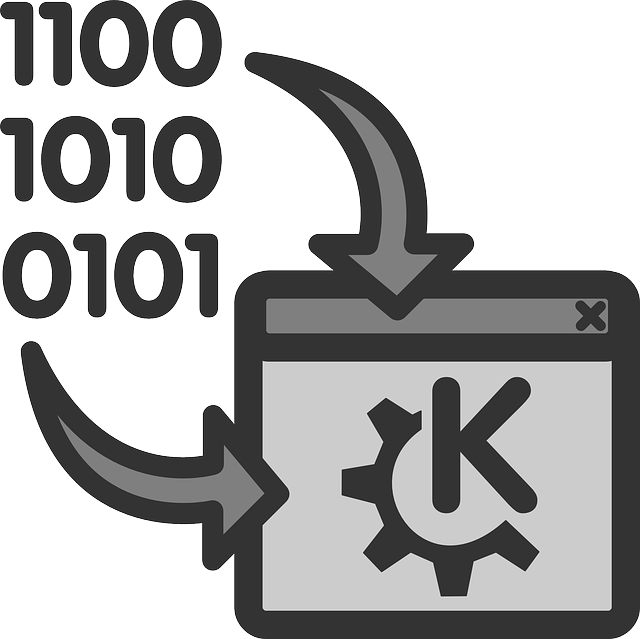

We believe security software like Kicksecure needs to remain Open Source and independent. Would you help sustain and grow the project? Learn more about our 14 year success story and maybe DONATE!
Security
RoadmapAdvanced
Documentationapparmor.dPrevious
page: Security RoadmapIndex page: Advanced
DocumentationNext page:
apparmor.d
Other Desktop Environments

How to use Other Desktop Environments other than LXQt with Kicksecure. Current situation. Risks. Future. (Gnome, KDE, Xfce, MATE, ...)
Current Situation
As of version 18, the Downloadable Kicksecure versions are available with
either:
- A) graphical user interface (GUI): desktop environment (LXQt); OR
- B) command line interface (CLI): text terminal only (no desktop environment).
However, other desktop environments like Gnome, KDE, Xfce, LXDE
and so on can be manually installed.
 The default login manager in Kicksecure is
The default login manager in Kicksecure is greetd +
wlgreet. wlgreet reads a configuration file to
determine what desktop environment to start, it does not permit
selecting an alternate desktop environment from the login prompt. Users
who want to use a non-default desktop may wish to switch to a different
display manager, such as LightDM.
Risks
- Unsupported configuration: When installing your own desktop environment such as for example GNOME, you're on your own. This is unsupported.
- Recommendation for advanced users: Start with Kicksecure CLI, the text terminal-only version of Kicksecure, which comes without a desktop environment installed by default, and install a desktop environment of your choice there. This is much better than starting with Kicksecure LXQt and then uninstalling LXQt to install another desktop environment.
- Additional background services: Other desktop environments
install additional background services. The Kicksecure project hasn't
researched the security/privacy implications of having these installed.
For example:
- GNOME automatically installs GeoClue. (systemcheck warns if that very package is installed, but still...)
- See also Dev/GNOME wiki page, chapter Security.
- Unvetted default applications: Other desktop environments also ship a different selection of default applications that have not necessarily been checked for security/privacy. Installing your own desktop environment may result in software packages being installed that are not well hardened or chosen with security in mind.
- Potentially broken functionality:
- user-sysmaint-split integration issues: This is only applicable to users of user-sysmaint-split. See also user-sysmaint-split, Default Installation Status. It does not apply to users of unrestricted admin mode. Only the default desktop environment (or rather login managers) is tested with user-sysmaint-split by developers. Other desktop environments might have glitches. [1]
- Open Link Confirmation: open-link-confirmation may or may not be functional.
- File Manager: File Manager D-Bus shim is untested on unsupported desktop environments.
- Non-exhaustive list.
Future
Since Kicksecure is an Open Source / Freedom Software project, Kicksecure developers are hoping that other developers join the project and maintain other desktop environments. That someone could be you?
Technical Information
Unfortunately using other desktop environments has become much more difficult due to port to Wayland in version 18 and user-sysmaint-split.
Switching the Wayland compositor used by Kicksecure isn't supported currently. Supporting a Wayland compositor is much more involved than supporting a window manager under X11, because the compositor is both the window manager *and* the display server. Of all the desktop environments in Kicksecure, LXQt was the only one light enough to be suitable for Kicksecure and that had mature enough Wayland support, and the best-supported compositor for LXQt is labwc, so that's what we went with. (For similar reasons, switching the desktop environment entirely is also difficult.)Kicksecure developer @arraybolt3
Forum Discussions
- https://forums.kicksecure.com/t/multiple-workspaces-multiple-virtual-desktops-in-kicksecure-18-wayland-labwc/1443
- https://forums.kicksecure.com/t/kde-doesnt-work-correctly-with-kicksecure-18/1470
- https://forums.kicksecure.com/t/switch-lxqt-compositor-labwc-settings/1403
See Also
Footnotes
- ↑ * Such as when booting into a sysmaint session,
a non-default login manager might suggest to login as account
userrather than as accountsysmaint. * Or when booting into a user session, a non-default login manager might suggest to login as accountsysmaintrather than as accountuser.
Categories: Documentation